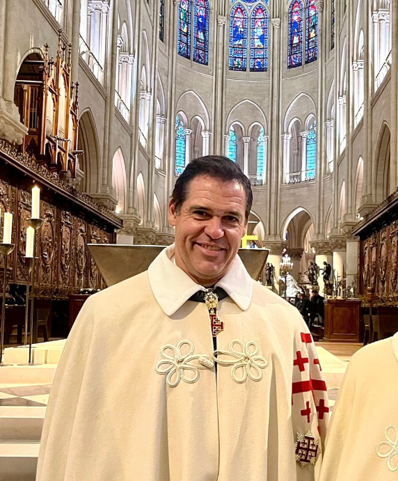

Louis XX, duc d’Anjou
Louis Alphonse de Bourbon, né le 25 avril 1974 à Madrid, est le chef de la maison de Bourbon et le prétendant légitimiste au trône de France sous le nom de Louis XX.
Descendant direct de Louis XIV via Philippe V d’Espagne, il incarne la continuité de la dynastie capétienne, qui a régné sur la France pendant plus de 800 ans.

Sa vision pour la France
Louis XX prône une monarchie constitutionnelle moderne, respectueuse des libertés démocratiques tout en restaurant les valeurs traditionnelles et catholiques.
Dans son discours du 2 septembre 2023 en Vendée, il a déclaré : « La France a besoin de renouer avec son histoire et sa foi pour retrouver sa grandeur. »
Il s’engage à être un roi au service du peuple, un symbole d’unité et de justice.
Son engagement
Louis XX participe activement à des commémorations, comme celles de la Vendée, et soutient des œuvres caritatives en lien avec l’héritage catholique français.
Il est marié à María Margarita Vargas Santaella, et leurs enfants représentent l’avenir de la dynastie.
Suivez ses actions et découvrez son message sur notre site et nos réseaux sociaux.